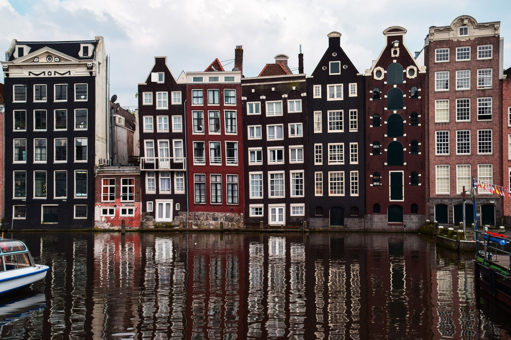
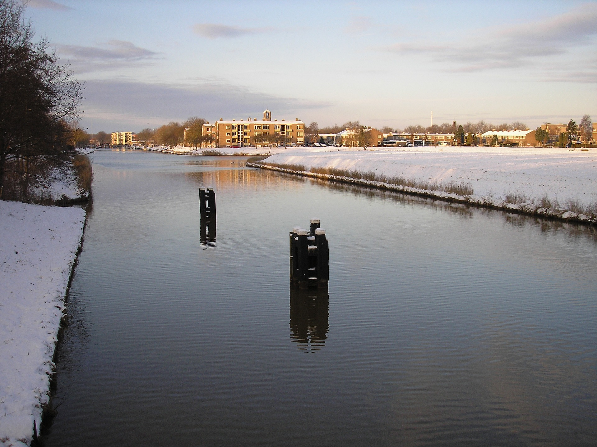

×
Home
Profile
About Me
Services
Portfolio
Contact
Steven's Portfolio
Welcome!
Check out my portfolio, for your benefit.
1 / 3

Amsterdam Lives!
2 / 3
Breda being strong!
3 / 3

Emmeloord roots
❮
❯
 Steven's Portfolio
Steven's Portfolio